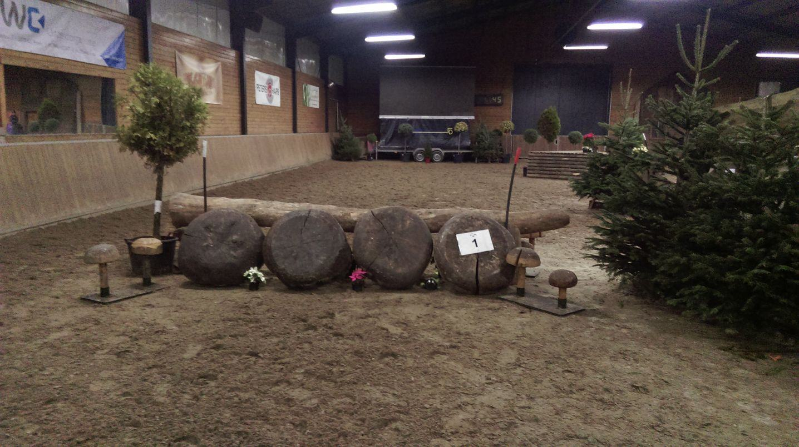
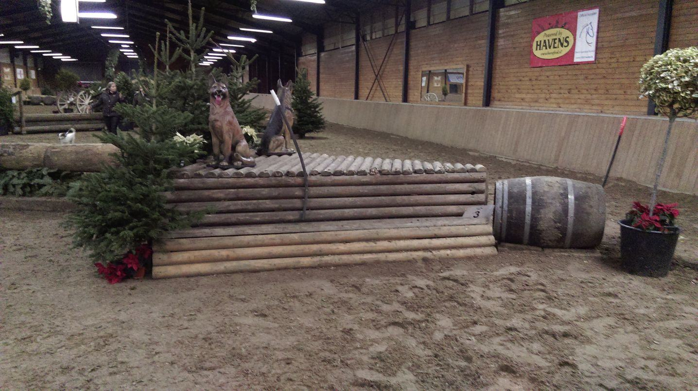
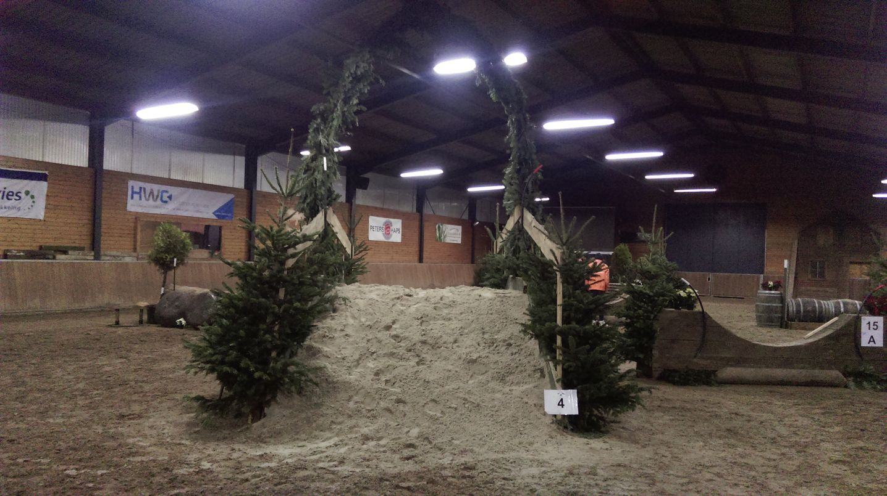
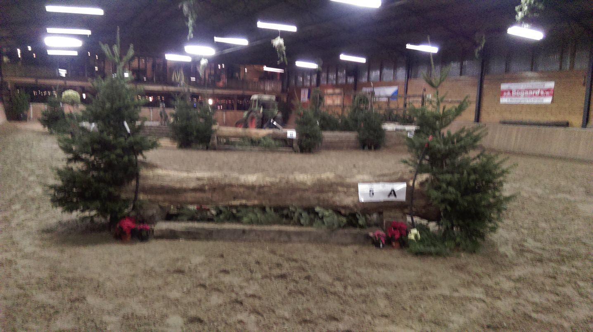
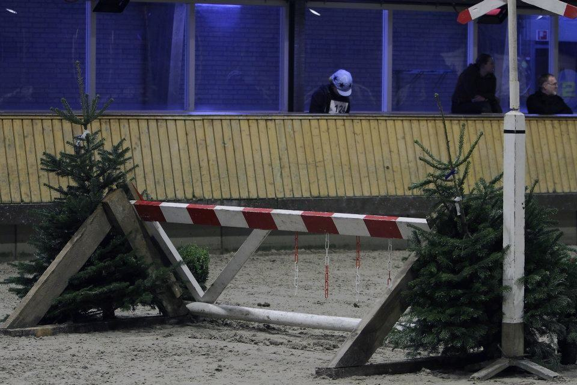
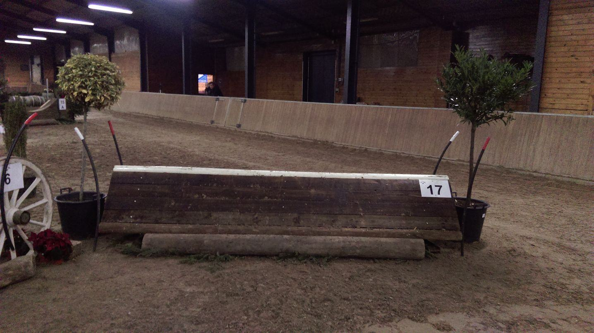
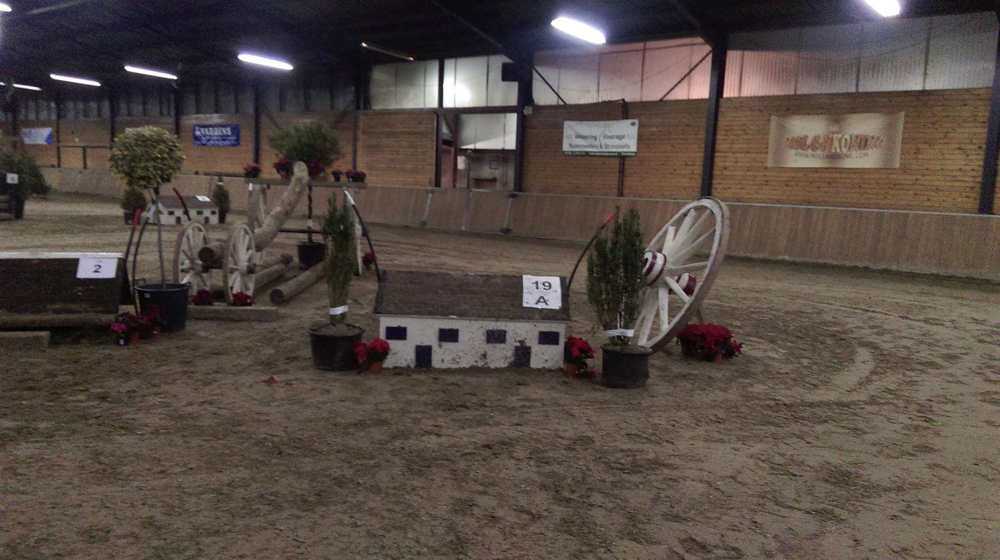
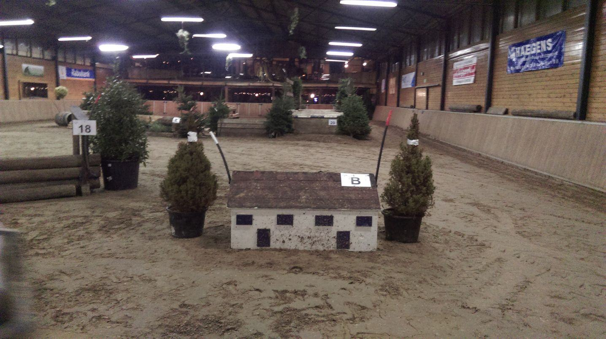
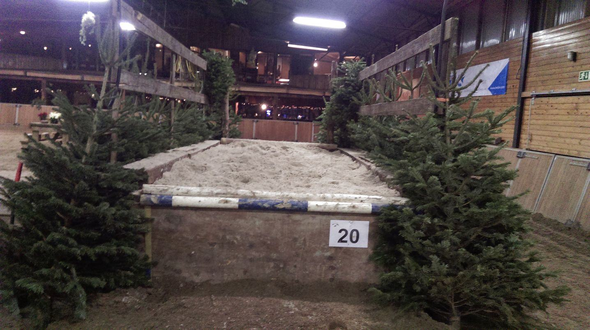
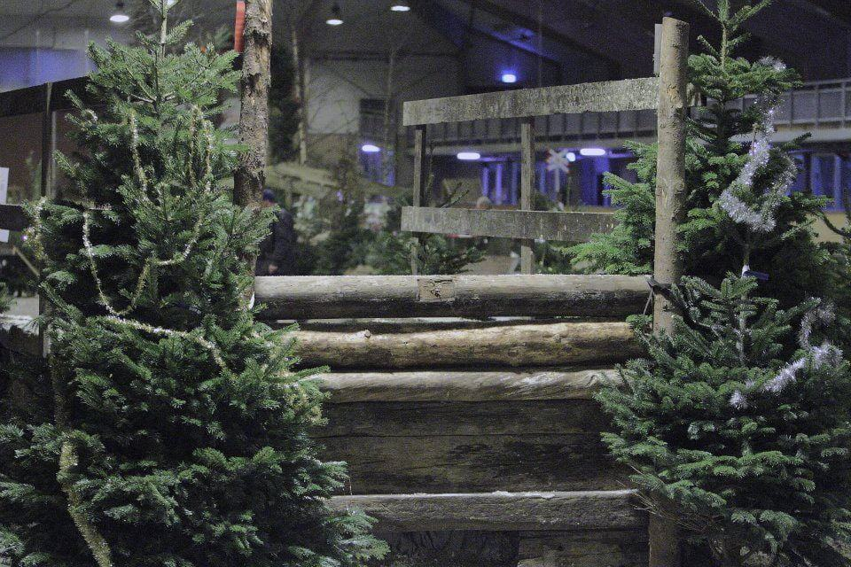
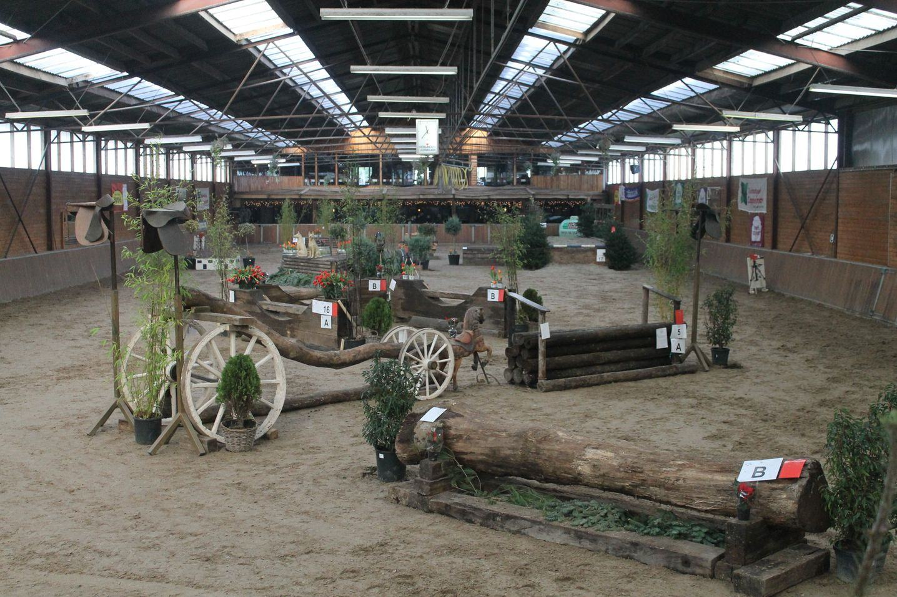
De hindernissen
Van een echte heuvel tot opsprongen. Rij hier alvast een rondje over het parcours van eerdere edities.
Finish!
Zin om ze echt te springen? Je schrijft je in voor de wedstrijd via Mijn KNHS.
Hindernis 1 van 18
Boomstammen
Alle hindernissen op een rij
Klik op een hindernis en je springt er meteen naartoe. Het parcours verandert elk jaar een beetje.

Zelf over deze hindernissen?
Schrijf je in voor de wedstrijd of kom eerst trainen. Op 28 december kun je de hele dag terecht voor een training.